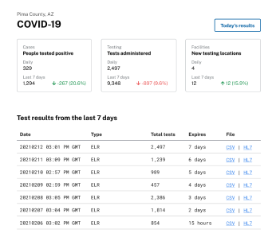

ReportStream makes it easier to share public health data
ReportStream is a free, open-sourced data platform that makes it easier for public health data to be more easily transferred between senders and public health departments.
Learn more

For state public health departments
Get fast, complete COVID-19 electronic test results from your jurisdiction
Support fewer connections
ReportStream’s model focuses on aggregating data from multiple sources and senders, which you receive together in a single feed at your preferred frequency and format.
Get valuable insights
ReportStream gives you insights about your data, such as reporting trends, and alerts you if there are any errors
Receive data from SimpleReport
If your jurisdiction is interested in receiving point-of-care tests results from SimpleReport, you can get this data from ReportStream
For local public health departments
Get access to COVID-19 electronic test results without building an ELR connection
Receive faster data
Get direct access to data from senders connected with ReportStream, such as facilities using SimpleReport, in your jurisdiction
No ELR necessary
Receive data directly via a ReportStream web account
Documentation to help you get started with ReportStream
For states interested in making an ELR connection with ReportStream, please check out the following resources to learn more
-

About ReportStream
Download PDF -
Onboarding guide
Download PDF -
Technical Documentation
Download PDF